Visual remediation
Four implementation waves, 29 native captures and an explicit findings-to-fixes record.
Implementation complete; native acceptance remains partial.174 Jest suites / 1,393 tests pass. Japanese heading clipping at accessibility size remains open. VoiceOver, the complete device/state matrix and Android acceptance have not passed.
Full implementation report · Route coverage · Capture manifest
F1 · One metallic text rendering path
The independent SVG glyph layer is gone. Latin, diacritic and multiline headings are sharp; the non-Latin accessibility issue stays open.

Original 21 September audit capture. Not recaptured during this remediation.

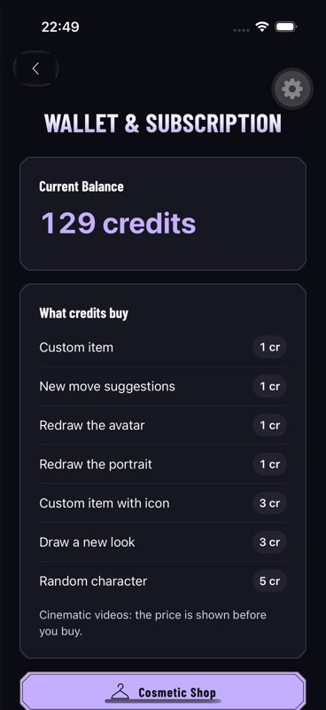
Single sharp metallic heading and quiet information panels.

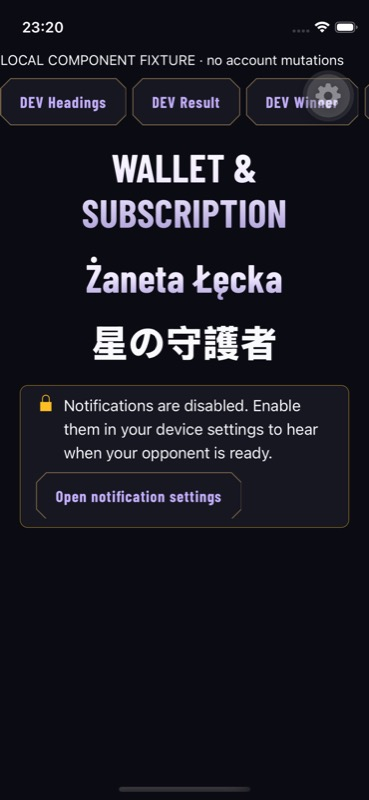
Diacritics, non-Latin solid fallback and banner.
F2 · Full-width banner message
The utility action sits below the message. Native Settings and the accessibility fixture show the same component.

Original 21 September audit capture. Not recaptured during this remediation.

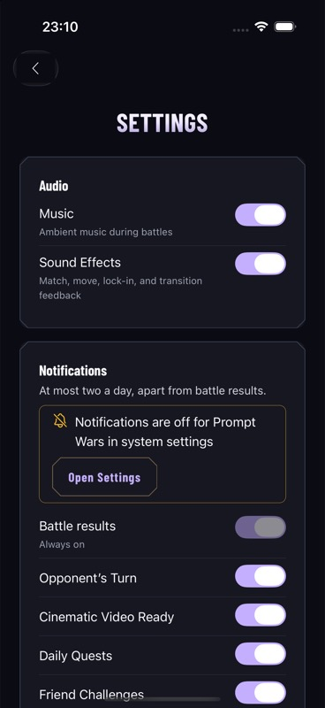
Message and utility action have independent rows.

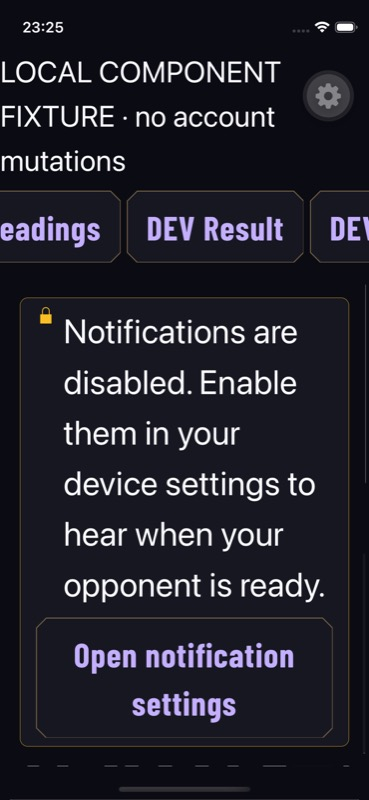
Full message and long action wrap independently; fontScale 2.143.
F3 / F5 · Clear verdict and equipped identity
A short outcome and one intact series score. No-contest deliberately receives stale score/KO/winner inputs in the fixture.

Original 21 September audit capture. Not recaptured during this remediation.

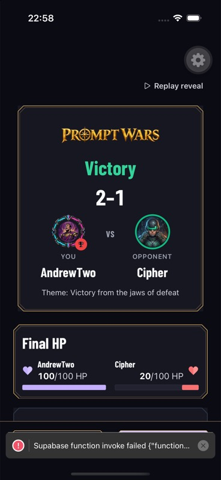
Actual practice victory, intact 2–1 score and equipment; development toast retained.

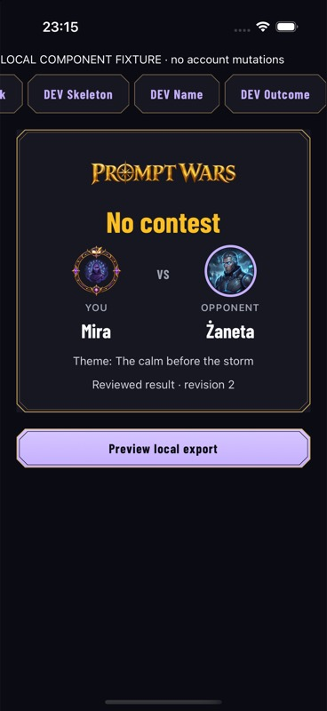
Supplied stale winner, 2–1 and KO do not appear as the current verdict.

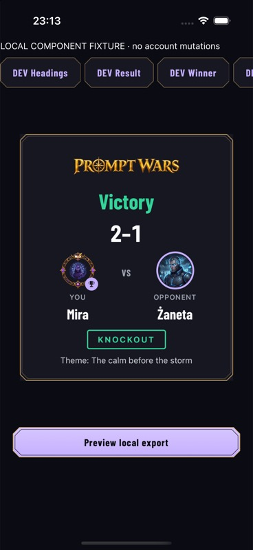
Actual local capture after font/avatar/frame readiness; no OS share destination.
F4 · Header and status boundaries
Fixed safe regions stay above scrolling content. Authentication also uses a compact functional heading.

Original 21 September audit capture. Not recaptured during this remediation.

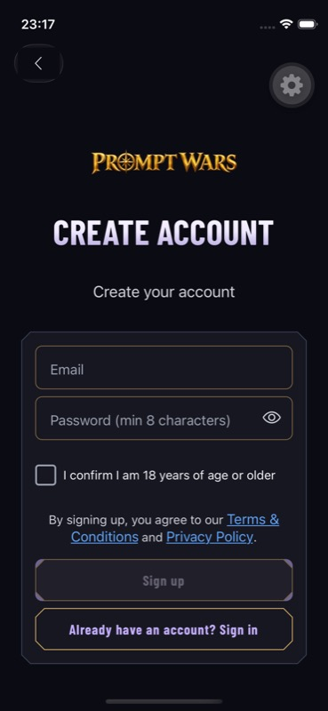
Readable form/header boundary; no signup submitted.

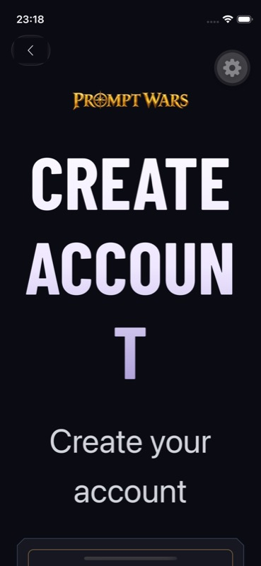
Sharp wrapped title; inside-word wrapping remains visible.

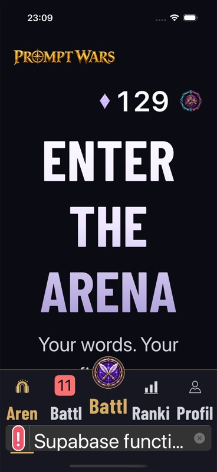
Sharp heading and protected status area; tab-label truncation remains visible.
F5 / C1 · Equipped Shop and the correct field
The equipped summary uses the frame renderer. The actual Signature colour shortcut lands in Fighter without discarding the editor draft.

Original 21 September audit capture. Not recaptured during this remediation.

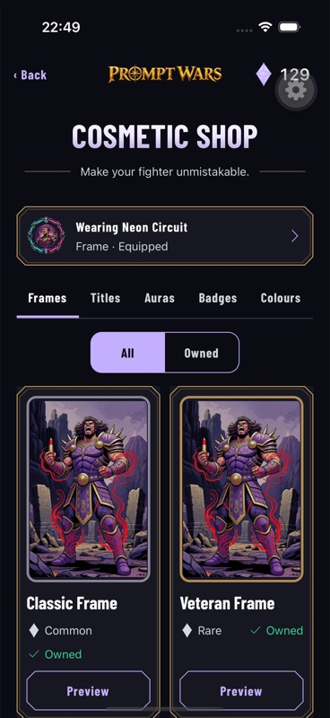
Equipped Neon Circuit summary, tabs and explicit previews.

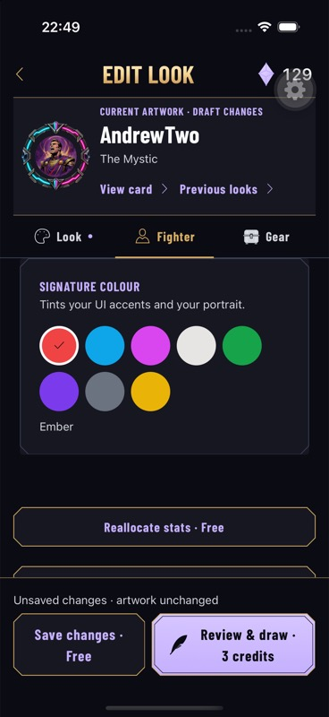
Actual Shop entry into Fighter / Signature colour; existing draft retained.
F6 · Secondary panels and prices
Shared hierarchy, quiet surfaces and one border treatment. This does not certify every result/recovery overlay.

Original 21 September audit capture. Not recaptured during this remediation.

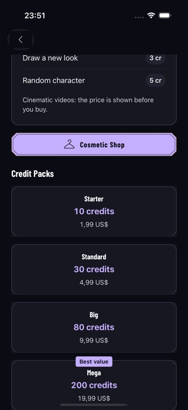
Full-width price rows, one border each; no purchase initiated.

Original 21 September audit capture. Not recaptured during this remediation.

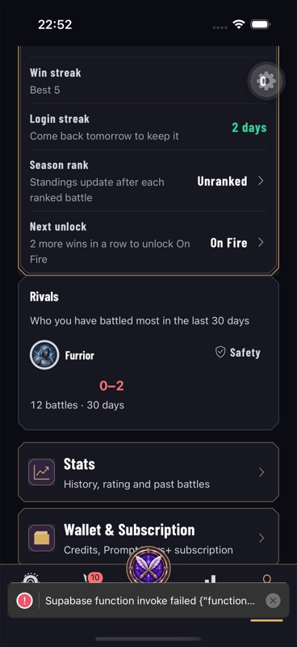
Shared hierarchy and quiet panel; development toast retained.
F7 · Winner fits the measured stage
Both phone sizes use the real winner component with local data. Full timed/reduced-motion/accessibility progression remains separate acceptance work.

Original 21 September audit capture. Not recaptured during this remediation.

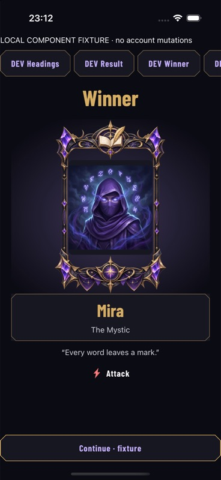
Real winner component with local fighter data and pinned fixture Continue.

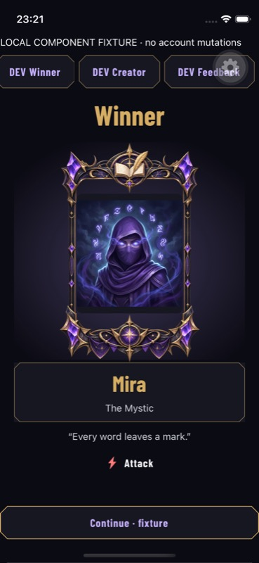
Winner name, contained frame and Continue visible together.
F8 · Actual writing and recovery
The previously source-only route was checked in a free active practice. Text survived parking, reopening and toggling tips. The battle was later canceled without a charge.

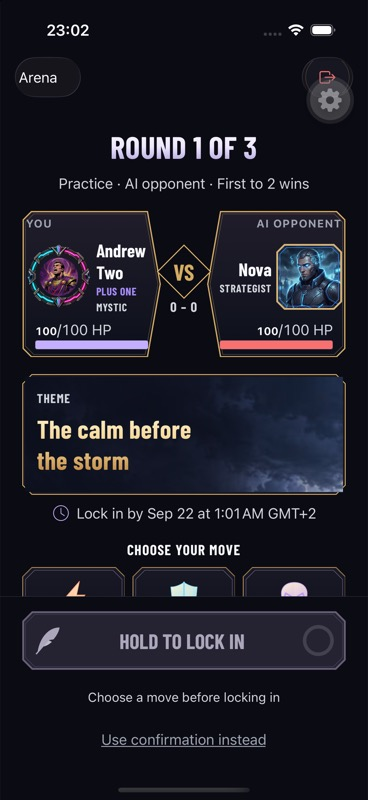
Single authoring selector in an actual opened round.

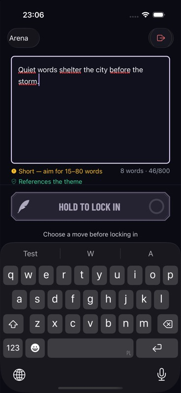
Typed local text, caret and unavailable lock control remain reachable.

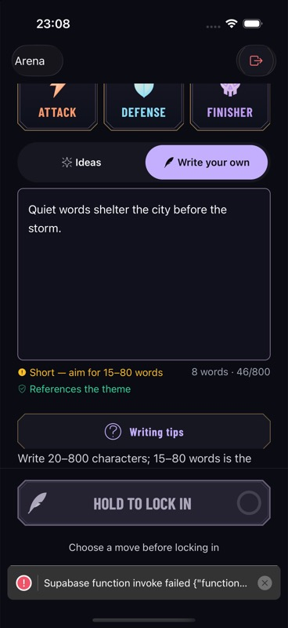
Same local draft after parking/reopening and disclosure toggle.
F9 · Feedback and compact skeleton
Actual ended-season copy and component fixtures for skeleton and independent empty/error feedback.

Original 21 September audit capture. Not recaptured during this remediation.

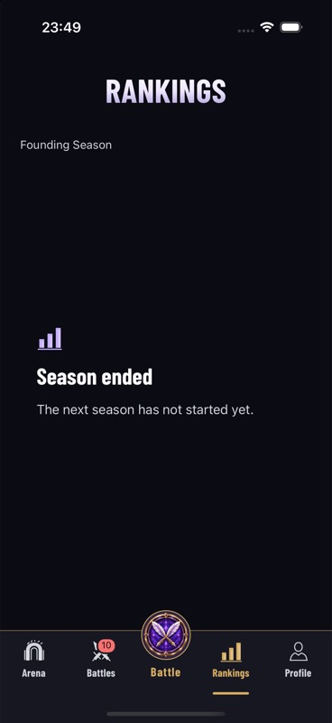
Actual server season state; no dates or rewards invented.

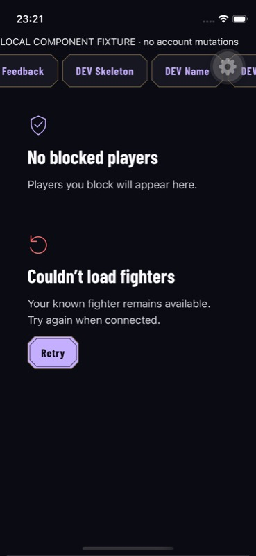
Distinct empty/error headings and retry; no failed live request induced.

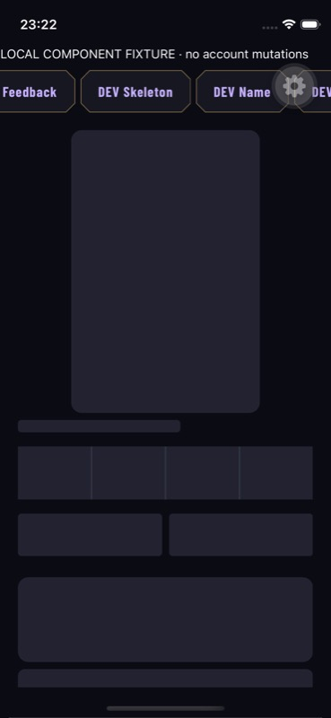
Current hero, four-stat row and paired action geometry.
F10 · Entry, creator and list hierarchy
Auth routes are actual native captures. Creator evidence covers shared controls only; full first-run progression remains pending.

Original 21 September audit capture. Not recaptured during this remediation.

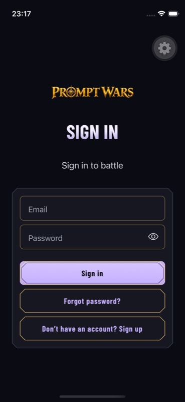
Compact brand and functional heading on small phone.

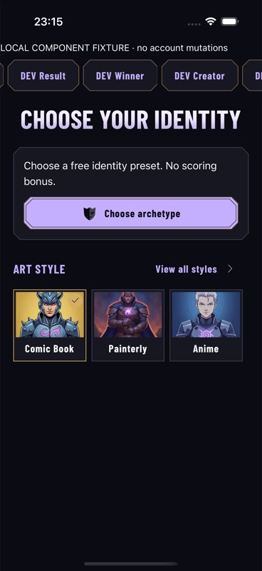
Shared real controls, not authenticated creator progression.

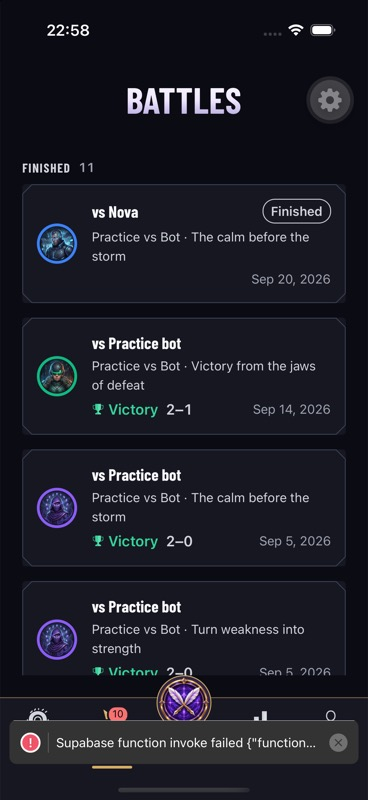
Finished bot/legacy rows; no populated human safety acceptance.
Open native issue · non-Latin accessibility text
At fontScale 2.143, Japanese text can paint beyond its measured width. It also reproduced in plain native Text; no experimental fallback workaround is retained. This remains open, alongside the unperformed device/state checks in the report.

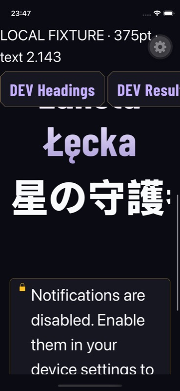
Unresolved at 375pt / fontScale 2.143 in the tested native runtime.